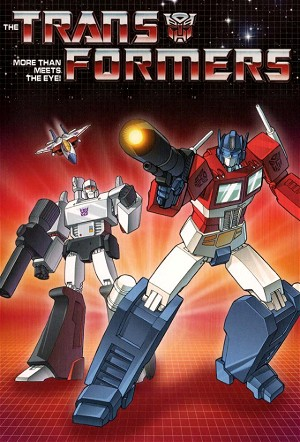

The Transformers (1984)
ActionAdventureAnimationChildrenFamilyScience Fiction
| Year | 1984 |
|---|---|
| Rating | TV-Y7 |
| Status | Completed |
| Seasons | 5 |
| Episodes | 128 |
| Genre | Action, Adventure, Animation, Children, Family, Science Fiction |
Two opposing factions of transforming alien robots engage in a battle that has the fate of Earth in the balance.
Episodes
Specials
| # | Title | Air Date | Synopsis |
|---|---|---|---|
| 1 | Scramble City (Japanese Original Video Animation) | 1986-04-01 | Beginning with a recap of the coming of the Transformers to Earth and the story of Devastator, the OVA then gets its original story underway, as the Autobots are shown to be in the midst of constructing the powerful "Scr |
| 2 | The Transformers: The Movie | 1986-08-08 | In 2005, the war between the Autobots and Decepticons has culminated in the Decepticons conquering their home planet Cybertron, while the Autobots operate from its two moons preparing a counter-offensive. Optimus Prime s |
| 3 | Triple Changer: From Toy to Comic to Screen - The Origin of the Transformers | 2011-11-03 | |
| 4 | Secret Files of Teletraan II | — | The Secret Files of Teletraan II were a series of short (1–2 minute) profiles which aired in 1986, after select episodes of the third season of the original Sunbow cartoon series. They included recaps of past events, cha |
| 5 | The Combiner: Forming the Transformers Animated Series | — | |
| 6 | The Autobots, the Decepticons and the Fans | — | Featurette about the hardcore keepers of the franchise, the fans, get a chance to show off their love for all things Transformers. |
| 7 | Concept Art | — | |
| 8 | Actor Interviews (Part 1) | — | |
| 9 | Actor Interviews (Part 2) | — | |
| 11 | Interview with Earl Kress | — | |
| 12 | Interview with Buzz Dixon | — | |
| 13 | Interview with Flint Dille | — | |
| 14 | Into the Creation Matrix: A Conversation with Bud Budiansky | — | |
| 15 | Red Alert PSA | — | Unaired Public Service Announcement featuring Red Alert teaching kids how to safely ride a bicycle at night. Based on a similar G.I. Joe PSA featuring Dusty and later reused on Jem and the Holograms featuring Jem and Kim |
| 16 | The Headmasters: Voicing the Robots in Disguise | — | Voice actors of the cartoon series. |
| 17 | Tracks PSA | — | Unaired Public Service Announcement featuring Tracks teaching kids that it's not okay to steal a car. Based on a similar G.I Joe PSA featuring Shipwreck and reused for Jem and the Holograms featuring Jem and Aja. It |
| 18 | Bumblebee PSA | — | Unaired Public Service Announcement featuring Bumblebee teaching kids that it's not a good idea to run away from home. Based on a similar G.I. Joe PSA featuring Shipwreck. It was intended to air with "Cosmic Rust" |
| 19 | Seaspray PSA | — | Unaired Public Service Announcement featuring Seaspray teaching kids about the importance of wearing a lifejacket when you're on a boat. Based on a similar G.I. Joe PSA featuring Deep Six. It was intended to air with |
| 20 | Powerglide PSA | — | Unaired Public Service Announcement featuring Powerglide teaching kids not to jump to conclusions. Based on a similar G.I. Joe PSA featuring Gung-Ho. Intended to air with "B.O.T." |
| 22 | Transformers Universe: They Were Always Real to Me | — | In January 2008, Hasbro unveiled a promotional CGI animation on Transformers' official web site, entitled ''They were always real to me''. It was a promo for the "Transformers Universe" line and featured a CGI animated r |
| 26 | Interview with David Wise | — | |
| 52 | Fan Art Gallery | — | |
| 55 | Concept Art Gallery | — | |
| 56 | Autobot History | — | |
| 57 | Deceptacon History | — | |
| 58 | Predacon History | — | |
| 59 | Transformers Generation 1 S01 E01: Table Read | 2024-06-28 | Transformers Generation 1 S01 E01: Table Read! With special guests: Arif S. Kinchen & Frank Todaro Transformers fans prepare yourselves… Transformers Generation 1 Season 1 Episode 1: Table Read, featuring the voices of |
| 60 | Original Commercials, part 1 | — | |
| 61 | Original Commercials, part 2 | — | |
| 62 | Original Commercials, part 3 | — |
Season 1
The Autobots—led by Optimus Prime—flee their dying planet Cybertron in search of energon, only to crash on Earth four million years later. Awakening in the modern era, they ally with humans like Spike and Sparkplug Witwicky to defend Earth and the Ark from the devious Decepticons.
| # | Title | Air Date | Synopsis |
|---|---|---|---|
| 1 | More Than Meets the Eye (1) | 1984-09-17 | While traveling through space in the Ark, the Autobots are ambushed by their enemies, the Decepticons. The battle moves into the Ark itself, leading to a damaging crash on Earth. After millions of years of dormancy, both |
| 2 | More Than Meets the Eye (2) | 1984-09-18 | After being rescued from a Decepticon attack, Spike and Sparkplug offer their assistance to the Autobots. And the Autobots are going to need it in order to stop the Decepticons from gaining the power to conquer Cybertron |
| 3 | More Than Meets the Eye (3) | 1984-09-19 | The Autobots do whatever it takes to prevent the Decepticons from using a recently constructed ship to leave Earth and head for Cybertron. |
| 4 | Transport to Oblivion | 1984-10-06 | The Decepticons have managed to construct a device that, once successfully tested, will allow them to travel to Cybertron. Later, they use a reprogrammed Bumblebee to make sure the Autobots walk into an ambush. |
| 5 | Roll for It | 1984-10-13 | Starscream is now in charge of the Decepticons, but all he does is lead them to defeat in battle against the Autobots. But things are about to get much worse when Megatron returns, setting his sights on a new and powerfu |
| 6 | Divide and Conquer | 1984-10-20 | A battle with the Decepticons leaves Optimus Prime damaged. Several Autobots journey to Cybertron to retrieve a vital part that will help repair him, but the Decepticons take advantage of the situation and launch an atta |
| 7 | S.O.S. Dinobots | 1984-10-27 | New allies for the Autobots are built, bringing about Grimlock, Slag and Sludge. However, the Dinobots prove hazardous to the Autobots and must be locked away. But they may be the only hope for the Autobots after a battl |
| 8 | The Ultimate Doom: Brainwash (1) | 1984-11-03 | The Decepticons raid the Ark after tricking the Autobots with a distraction and Sparkplug gets captured. They use a device called a hypno-chip, created by a human named Dr. Arkeville, on Sparkplug to gain control over hi |
| 9 | The Ultimate Doom: Search (2) | 1984-11-10 | Natural disasters plague Earth as The Autobots attempt to stop Megatron's plan. A team of Autobots and Spike head for Cybertron to save Sparkplug, but they could be heading straight for a trap. |
| 10 | The Ultimate Doom: Revival (3) | 1984-11-17 | The Autobots on Cybertron evade capture and work toward finding a way to counteract the effects of the hypno-chips. Meanwhile, Optimus Prime leads the remaining Autobots in a battle to put an end to Megatron's plan. |
| 11 | War of the Dinobots | 1984-11-24 | A meteor is about to crash on earth and maybe be a good source to get a lot of energy, so Optimus Prime orders the Dinobots to guard the meteorite to avoid the Decepticons from taking this energy, but Megatron has a plan |
| 12 | Countdown to Extinction | 1984-12-01 | Starscream is going to destroy the Earth and take the energy from the explosion to rule the Universe. The Autobots and Decepticons must team up to stop that disaster. |
| 13 | Fire in the Sky | 1984-12-08 | The Earth is returning to the ice age, becuse an evil plan of the Decepticons who have found a new partner... |
| 14 | Heavy Metal War | 1984-12-15 | The Constructicons, recently created for the Decepticons, have built a device to give Megatron the powers and skills of his soldiers. All this is to give him the advantage in a challenge he issues to Optimus Prime. And i |
| 15 | Fire on the Mountain | 1984-12-22 | The Autobots discovers that the Decepticons are trying to make a new weapon with the energy from the center of the Earth, controlled by a gem in a pyramid in Peru. The Autobots needs some backup from their old friend Sky |
| 16 | A Plague of Insecticons | 1984-12-29 | The Decepticons discovers an old type of Decepticons, the Insecticons. They will ally to destroy the Autobots, who will have to face them in another great battle. |
Season 2
The battle between the Autobots and the Decepticons continues on Earth. Since the initial characters were all evolved from toys, the animated images of many characters are very different from the toys. Such as tin and ambulance, I don’t know how many children were disappointed by the toy images of these two. In fact, the original shape of the iron sheet and the ambulance is the combat armor and mobile repair stand/turret in the Diaclone series. There is no head design at all. The driver is standing behind the windshield to operate the combat armor. Similarly, the original form of Megatron, Walther P38, is not very ideal due to the limitation of deformation design. In the animation, the character image has been modified in order to match the setting of the leader of the Decepticons.
| # | Title | Air Date | Synopsis |
|---|---|---|---|
| 1 | Autobot Spike | 1985-09-23 | Spike is severely hurt during a battle. His mind is placed into Sparkplug's recent creation, Autobot X, until his body can be saved by an operation. But the Autobot X body was unstable to begin with and Spike soon ends u |
| 2 | The Immobilizer | 1985-09-24 | Wheeljack's new invention, the Immobilizer, is capable of rendering any Transformer immobile for a short time. Once the Decepticons get their hands on it, they modify it and begin leaving many Autobots immobile. |
| 3 | Dinobot Island (1) | 1985-09-25 | Proving to be a danger even to their own allies, the Dinobots are sent away to train on a recently discovered island in the hopes that they will learn how to effectively work together. The island, however, is far from or |
| 4 | Dinobot Island (2) | 1985-09-26 | The Decepticons' tampering on the island creates openings to other times, allowing all sorts of things from various times to arrive in the present. The Autobots race to reverse this before it's too late and to stop the D |
| 5 | Traitor | 1985-09-27 | Failing to cause a divide between the Decepticons and Insecticons, Mirage's mind suddenly becomes enslaved and he is used by them in a plot against the Autobots. |
| 6 | Enter the Nightbird | 1985-09-30 | The Decepticons send the recently stolen Nightbird on a mission to steal an informative chip from the Autobots. |
| 7 | Changing Gears | 1985-10-01 | The Decepticons plan to take energy from the center of the sun using a circuit from one of their enemies, Gears. The Autobots must defeat the Decepticons and rescue their companion. |
| 8 | A Prime Problem | 1985-10-02 | The latest Decepticon plot to destroy the Autobots involves the creation of an Optimus Prime duplicate. They hope this imposter will be able to convince the other Autobots he is the genuine article and will lead them int |
| 9 | Atlantis, Arise! | 1985-10-03 | The legendary Atlantis is proven to be real and its residents aren't exactly peaceful. |
| 10 | Attack of the Autobots | 1985-10-04 | Jazz, Bumblebee and Sparkplug are up against insurmountable odds when Megatron manages to turn the recharging Autobots evil. |
| 11 | Microbots | 1985-10-07 | The Decepticon ship that shot down the Ark has been found and Megatron manages to find a component containing great power. With this power a danger to everyone, Perceptor, Bumblebee and Brawn shrink down and journey thro |
| 12 | The Master Builder | 1985-10-08 | The Constructicons trick Grapple and Hoist with claims of having left Megatron. They construct a tower Grapple designed to absorb solar energy, which Optimus Prime did not want to be built for fear of the Decepticons get |
| 13 | The Insecticon Syndrome | 1985-10-09 | The Insecticons become extremely powerful after they consume an energy source. They enslave every Decepticon except for Megatron. The Decepticon leader and the Autobots will have to team up to return the Insecticons to n |
| 14 | Day of the Machines | 1985-10-10 | Megatron seizes control of the Torq III computer, enabling him to control the flow of oil. |
| 15 | Megatron's Master Plan (1) | 1985-10-14 | Megatron and a politician team up to slander the image of the Autobots. |
| 16 | Megatron's Master Plan (2) | 1985-10-15 | While Megatron and Shawn Berger enjoy Decepticon Day in Central City, Spike tries to find video evidence that proves the Autobots are innocent! |
| 17 | Auto Berserk | 1985-10-16 | Red Alert is damaged during a battle, making him rather paranoid. This causes him to join forces with Starscream, who wants to get a hold of the Negavator. |
| 18 | City of Steel | 1985-10-17 | The Decepticons plan to take New York and turn it into their new home base, disassembling Optimus Prime in the process. The rest of the Autobots must save Optimus and New York City without their leader. |
| 19 | Desertion of the Dinobots (1) | 1985-10-21 | Both Autobots and Decepticons are facing tough times as they are in need of the element called Cybertonium. The Decepticons quickly get as much as they need, but the only way for the Autobots to get it is to rely on the |
| 20 | Desertion of the Dinobots (2) | 1985-10-22 | With the Dinobots captured by Shockwave, and the Autobots' malfunctioning reaching terminal levels, Spike and Carly must fight their way through the bowels of Cybertron to acquire the coveted Cybertonium element before a |
| 21 | Blaster Blues | 1985-10-23 | From the moon, Megatron manages to interfere with the radio transmissions on Earth. Blaster and Cosmos go to put an end to his plot as the other Autobots work to help those affected by the loss of radio transmissions. |
| 22 | A Decepticon Raider in King Arthur's Court | 1985-10-24 | Spike, Hoist and Warpath find their battle with a group of Decepticons interrupted when they all get sent back in time to the middle ages. |
| 23 | The God Gambit | 1985-10-28 | Astrotrain tricks a race living on one of Saturn's moons, Titan, into thinking he is a god and gets them to do his bidding, which includes getting a hold of a newly discovered power. |
| 24 | The Core | 1985-10-29 | Megatron plans to drill his way to Earth's core in hopes of getting large amounts of energy. The Autobots try to stop him and initiate their new plan to take control over Devastator. When both sides battle for controllin |
| 25 | Make Tracks | 1985-10-30 | After someone steals him, Tracks is briefly unable to transform or talk. This isn't so bad, however, as it leads to the discovery that Decepticons are planning to turn stolen cars into weapons. |
| 26 | The Autobot Run | 1985-10-31 | Most of the Autobots lose their ability transform to robot mode after the Decepticons use a device on them. A handful of Autobots still capable of transforming are their only hope. |
| 27 | The Golden Lagoon | 1985-11-04 | A lagoon within a forest is discovered and found to contain a substance called electrum, which can make anyone invincible. The bad news is that the Decepticons manage to use it on themselves first. |
| 28 | Quest for Survival | 1985-11-05 | On the way to Earth with a type of insecticide to use against the Insecticons, Spike, Bumblebee and Cosmos encounter Morphobots. They get away just fine, but they inadvertently take Morphobots along for the ride. |
| 29 | The Secret of Omega Supreme | 1985-11-06 | Omega Supreme reveals his past to Optimus Prime, which involves a city's destruction, Megatron and the Constructicons. |
| 30 | Child's Play | 1985-11-07 | The space bridge accidentally sends several Autobots and Decepticons to a strange world in which they are no bigger than toys. |
| 31 | The Gambler | 1985-11-11 | With the others rendered powerless, Smokescreen has to enter the gambling world to get the Energon needed to revive them. |
| 32 | The Search for Alpha Trion | 1985-11-12 | Elita-1, leader of a group of female Autobots causing trouble for the Decepticons, is captured and used as bait to lure Optimus Prime into a deadly trap. However, Elita-1's strange time manipulation technique saves him, |
| 33 | Auto-Bop | 1985-11-13 | Innocent people fall under Megatron's control through music being played at a club. |
| 34 | Prime Target | 1985-11-14 | A hunter sets his sights on Optimus Prime and uses several captured Autobots to force him into a confrontation. |
| 35 | The Girl Who Loved Powerglide | 1985-11-18 | The Decepticons are trying to learn the secret surrounding a man's invention and go after his teenage daughter. Powerglide intervenes to rescue her, but this causes her to fall in love with him. |
| 36 | Triple Takeover | 1985-11-19 | Astrotrain and Blitzwing leave the Decepticons to do things their way, which includes capturing Megatron and Starscream and seizing control of a stadium. |
| 37 | Sea Change | 1985-11-20 | Seaspray falls in love, but the object of his affection is part of a rebel movement on another world. |
| 38 | Hoist Goes Hollywood | 1985-11-21 | Hoist gets a big break into show business after rescuing stuntmen. Sunstreaker, Powerglide, Warpath and Tracks are along for the ride as well. On the road to a movie career, however, they learn Dirge has stolen a device |
| 39 | The Key to Vector Sigma (1) | 1985-11-25 | The Decepticons acquire the Key that will give them access to Vector Sigma. After using Vector Sigma, they find the Key is also capable of making organics turn into machines. Megatron prepares to use it against Earth and |
| 40 | The Key to Vector Sigma (2) | 1985-11-26 | In response to the Stunticons, Optimus builds the Aerialbots. Megatron still has the key to Vector Sigma, and discovers that it has unexpected powers on Earth. |
| 41 | Masquerade | 1985-12-16 | The Autobots capture the Stunticons during one of their thefts. With the Stunticons now imprisoned, Wheeljack presents a way to disguise Autobots as them. Going undercover, Optimus Prime, Jazz, Mirage, Sideswipe and Wind |
| 42 | Trans-Europe Express | 1985-12-23 | Some Autobots take part in a charity race in Europe, but it's all a Decepticon ploy to obtain metal from Augie Canay's car in order to house the Pearl of Bahoudin. With their teammates damaged by the Stunticons, it will |
| 43 | War Dawn | 1985-12-25 | When the Autobots and Aerialbots attempt to foil one of Megatron's plans, the Aerialbots end up getting sent back in time. They arrive to a time where they see how Alpha Trion made, among others, Optimus Prime. |
| 44 | Cosmic Rust | 1985-12-26 | Megatron causes his fellow Decepticons to be infected with the deadly Cosmic Rust. Perceptor is captured to find a cure and he does, learning that Element X will do the job. The Decepticons are cured, but then they use P |
| 45 | Kremzeek! | 1985-12-27 | A creature made out of energy, Kremzeek, gets made and causes trouble for the Autobots, Decepticons and Japan. |
| 46 | Starscream's Brigade (1) | 1986-01-07 | Failing to topple Megatron, an exiled Starscream plans his revenge. He uses World War II era machines and five personality components to create the Combaticons, which prove very powerful in their Bruticus form. |
| 47 | The Revenge of Bruticus (2) | 1986-01-08 | The Combaticons tamper with the space bridge, purposely sending Earth toward the sun in hopes of destroying their enemies. As the Protectobots help out humans in danger, the Autobots and Decepticons race to defeat Brutic |
| 48 | Aerial Assault | 1985-12-10 | The Decepticons work with a smuggler to take over a Mideast palace and begin acquiring plane parts for the construction of an air fortress. The Aerialbots head to the scene, but Slingshot and Sky Dive get into trouble. B |
| 49 | B.O.T. | 1986-01-09 | During a battle, the Protectobots finish off the Combaticons, with the exception of Swindle. Megatron orders Swindle to reconstruct his destroyed comrades or else a bomb in his head will go off, destroying him. As Swindl |
Season 3
Since Optimus Prime died in the movie version, the Autobots led by Rodimus Prime fought against the Decepticons led by Galvatron, who evolved from Megatron. This season mentions the origin of the cartoon version of Transformers and the past history of Cybertron. Quintesson joins the fray this season, and Optimus Prime is revived at the end of the season.
| # | Title | Air Date | Synopsis |
|---|---|---|---|
| 1 | Five Faces of Darkness (1) | 1986-09-15 | While everyone continues to rejoice in their victory, unknown assailants capture Ultra Magnus, Kup and Spike. After being told by an alien, a group of Autobots suspect the Decepticons are the culprits. But when they arri |
| 2 | Five Faces of Darkness (2) | 1986-09-16 | The Autobots make it out of Charr, but Rodimus is down and looks out. In reality, he has made a trip to the Matrix and learns the Quintessons are behind the kidnapping. After Rodimus is revived, a rescue mission is soon |
| 3 | Five Faces of Darkness (3) | 1986-09-17 | The destruction of Quintessa causes the Autobots to arrive at Goo and poor Springer loses some parts. Blurr and Wheelie are stuck in a hostile place and are in need of some help. Meanwhile, the Quintessons agree to give |
| 4 | Five Faces of Darkness (4) | 1986-09-18 | Galvatron learns what has been going on recently and meets up with the Quintessons. Rodimus again looks for answers, discovering the bitter history between Quintessons and Transformers. The Quintessons created the Transf |
| 5 | Five Faces of Darkness (5) | 1986-09-19 | The Constructions use the newly created Trypticon to battle Metroplex, who is still unable to transform, on Earth. Sky Lynx tries to get the needed cog for Metroplex, which is with Blurr and Wheelie, but gets into a figh |
| 6 | The Killing Jar | 1986-09-29 | The Quintessons use Wreck-Gar, Cyclonus, Ultra Magnus and Marissa as research subjects, watching how they interact. Unfortunately for all of them, the ship they are on is heading for a black hole and this unusual group w |
| 7 | Chaos | 1986-09-30 | An alien is discovered to have a powerful weapon that fires crystals, which are taken from a creature Kup knows of, Chaos. Galvatron plans to construct his own powerful weapon on Chaos' home and several Autobots race to |
| 8 | Dark Awakening | 1986-10-01 | On the run from Galvatron, Spike, Daniel and several Autobots enter a mausoleum and find a surprisingly not dead Optimus Prime. This would be cause for great excitement among Autobots. Unfortunately, however, Optimus is |
| 9 | Starscream's Ghost | 1986-10-02 | Octane is on the run from The Decepticons. He is forced to hide in a crypt, where the ghost of Starscream lies in wait and then takes over Cyclonus. |
| 10 | Thief in the Night | 1986-10-06 | Octane locates the defeated Trypticon and brings him to Carbombya. There, they follow orders from Fakhaddi in order to get energon. They begin stealing landmarks around the world for him. |
| 11 | Forever is a Long Time Coming | 1986-10-08 | The Quintessons plan to use a portal through time to prevent the Transformers' revolt against them. Several Autobots wind up getting sent back to the fight and a robot with an important future arrives in the present. And |
| 12 | Surprise Party | 1986-10-09 | Wheelie and Daniel want to have a party for Ultra Magnus after a recent good deed of his. However, Ultra Magnus' birthday is unknown, even to him. Wheelie and Daniel try to find out the answer from Autobot records. Unfor |
| 13 | Madman's Paradise | 1986-10-13 | Daniel leaves a banquet being hosted by his parents. He and Grimlock end up discovering a Quintesson chamber and get stuck in a magical world. |
| 14 | Carnage in C-Minor | 1986-10-14 | The Autobots and Decepticons find that the voices of three aliens (Allegra, Zebop Scandana and Basso Profundo) can make a powerful weapon. |
| 15 | Fight or Flee | 1986-10-15 | The Decepticons attack a planet home to several Autobots and easily win as these Autobots prefer peace to fighting. Once the Autobots arrive, they try to persuade their peaceful comrades that only battling the Decepticon |
| 16 | Webworld | 1986-10-20 | Galvatron goes into therapy, but it does not exactly agree with him. Every one of the doctors' attempts at treating him fail before they consider using one last option. Cyclonus tries to stop them, however, after learnin |
| 17 | Ghost in the Machine | 1986-10-21 | Starscream, in Scourge's body, attempts to complete three assignments for the damaged Unicron in exchange for getting a new body. |
| 18 | The Dweller in the Depths | 1986-10-30 | The Quintessons trick the Decepticons into releasing the dangerous Trans-Organics. One of them, the Dweller, begins taking control over Autobots and Decepticons alike. |
| 19 | Nightmare Planet | 1986-10-31 | Daniel's nightmare troubles get a lot worse when the Quintessons make them real. Autobots and Predacons are forced to join forces in order to fight these nightmares. |
| 20 | The Ultimate Weapon | 1986-11-10 | Metroplex's transformation cog is taken by Swindle and First Aid blames himself for not stopping him. Meanwhile, Galvatron threatens to use a powerful weapon. |
| 21 | The Quintesson Journal | 1986-11-11 | Two planets are locked in a destructive war and the Autobots attempt to bring about peace. Things do not go so well, however, until a Quintesson Journal is found and provides evidence of Quintesson involvement in the war |
| 22 | The Big Broadcast of 2006 | 1986-11-12 | The Junkions fall victim to subliminal messages from the Quintessons, who are trying to get a journal off the Planet of Junk. This also causes the Junkions to attack Sky Lynx and Astrotrain, which brings the Autobots and |
| 23 | Only Human | 1986-11-13 | After the Autobots interfere with one of his plans, Victor Drath gets help from Ol' Snake (none other than the notorious Cobra Commander) to create artificial human bodies. Rodimus, Springer, Ultra Magnus and Arcee get c |
| 24 | Grimlock's New Brain | 1986-11-14 | Grimlock becomes a genius after trying to stop anti-electrons (released by Scukzoid and Slizardo) from causing disruptions in the new power generator. This proves very useful to the Autobots, especially when Grimlock lea |
| 25 | Money is Everything | 1986-11-17 | Marissa Fairborne and the Technobots encounter Dirk Mannis, who possesses the dangerous Recreator. Turns out the Quintessons want the Recreator for themselves and Dirk is happy to give it to them so long as he gets paid. |
| 26 | Call of the Primitives | 1986-11-18 | The evil Primacron plans to use an energy being named Tornadron to defeat the Transformers and help in his universal conquest. Meanwhile, the animal form Transformers leave during a battle between Autobots and Decepticon |
| 27 | The Burden Hardest to Bear | 1986-11-19 | Being the leader takes it toll on Rodimus and his attempt to relax gets him into a fight, in which he loses the Matrix. The Stunticons escape with it and Rodimus reverts to Hod Rod. At first, Hod Rod is perfectly fine wi |
| 28 | The Face of the Nijika | 1986-11-20 | A group of Autobots, Cyclonus and Quintessons become trapped within a Quadrant Lock Disc that has also kept the planet Zimojin and it's inhabitants trapped for thousands of years. To get out the Quintessons need a compon |
| 29 | The Return of Optimus Prime (1) | 1987-03-02 | While testing a new ship alloy, Jessica Morgan and Gregory Swafford (who hates Transformers) stumbled upon the ship Optimus Prime was on and saved him. Some time afterward, Jessica gets hurt in a battle between Protectob |
| 30 | The Return of Optimus Prime (2) | 1987-03-03 | Optimus Prime is back and leads a team to Charr to retrieve the ship alloy from Galvatron. Galvatron guides them to it's location, but they confront a couple dangers and must fend off infected Transformers. Optimus and S |
Season 4
In this season, the battlefield has been moved to Nebulon, and two new technologies, "Headmaster" and "Targetmaster", have been jointly developed with the locals. The difference from the plot of "Head Warrior" is: Cybertron was not destroyed, but was restored by injecting new energy into Cybertron, the Autobots won the final victory and the Decepticons ended in exile. Because when the United States produced the fourth season of "Transformers", it did not expect Japan to produce "Transformers: The Chief Warrior", so "Transformers: The Chief Warrior" produced by Japan and used to link up the third season of "Transformers" was rejected. as another set of independent worldviews. Japan did not broadcast the fourth season of "Transformers".
| # | Title | Air Date | Synopsis |
|---|---|---|---|
| 1 | The Rebirth (1) | 1987-11-09 | The Decepticons get the Plasma Energy Chamber key after an attack on Autobot City. A group of Autobots manage to get the key back after Scourge opens the chamber, but it's energy accidentally sends them to Nebulos, a wor |
| 2 | The Rebirth (2) | 1987-11-10 | Daniel and four Nebulans join with five Autobots to battle the Hive, but the Hive decide to do something similar with a group of Decepticons. Meanwhile, Optimus Prime goes to Vector Sigma to find out the whereabouts of t |
| 3 | The Rebirth (3) | 1987-11-11 | After capturing Daniel and Arcee and acquiring the Plasma Energy Chamber key, Scorponok and the Decepticons make their way to Cybertron. The Autobots head after them, but Spike and Cerebros stay on Nebulos and come up wi |